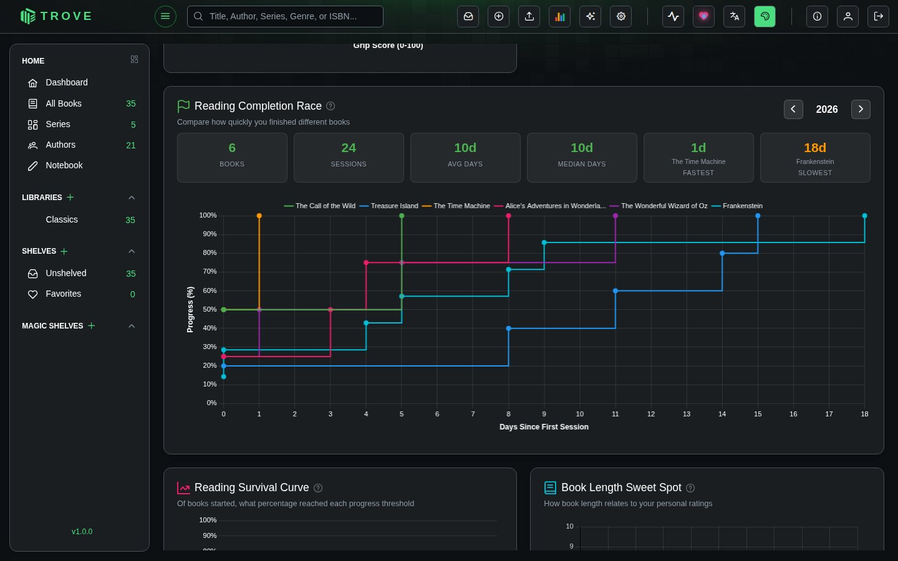
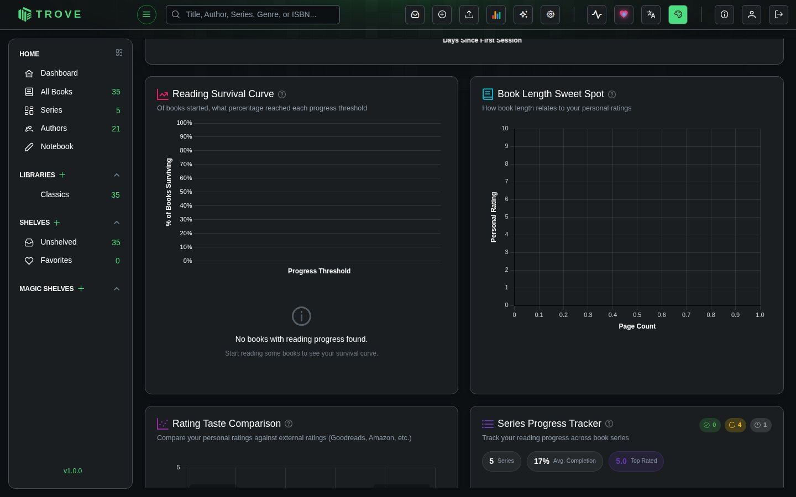
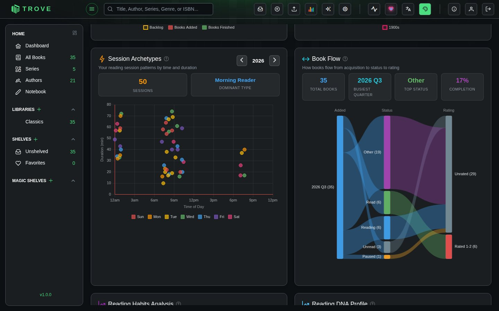
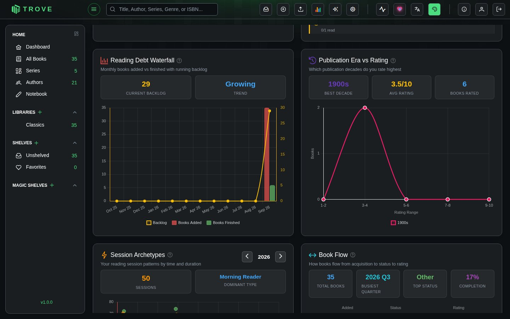

Reading statistics
Reading Statistics tracks your personal reading habits through 19 interactive charts. Access it from the stats button in the top bar.
Overview
Reading Stats visualizes your reading sessions, completion patterns, preferences, and habits. Charts update automatically as you read. Most charts support year or month filtering, and all include hover tooltips with detailed breakdowns.
Charts
Activity & Sessions

-
Reading Session Heatmap: Year-long calendar showing daily session counts with milestone badges (7-day streak, 30-day streak, 100 days, full year).
-
Favorite Reading Days: Distribution of reading sessions by day of week.
-
Peak Reading Hours: Session count and average duration by hour of day, filterable by year and month.
-
Reading Session Timeline: Week-based visual timeline showing session start/end times and duration per day.
-
Reading Activity Heatmap: Compact heatmap of reading activity patterns.
-
Session Archetypes: Reveals your reading personality by mapping every session by time of day and duration. Based on when and how long you read, it classifies you into an archetype like Night Owl, Early Bird, or Marathon Reader. A fun way to see your natural reading rhythm and whether weekday vs weekend habits differ.

Progress & Completion

-
Reading Completion Race: Puts your books head-to-head in a race to see which ones you finished fastest. Each line traces a book's progress from first session to completion, making it easy to compare pacing across different reads. Surfaces your fastest finish, slowest slog, and median completion time.
-
Reading Survival Curve: Answers the question: "Of the books I start, how many do I actually finish?" Tracks what percentage of started books survive past each progress milestone, pinpointing the exact "danger zone" where most books get abandoned. Useful for understanding your follow-through habits.
-
Completion Timeline: Timeline of when books were completed over time.
-
Reading Progress Distribution: Books grouped by completion percentage (not started, 1-25%, 26-50%, etc.).
-
Reading Status Distribution: Breakdown by status (reading, read, want to read, abandoned, etc.).
-
Series Progress Tracker: Shows how far you've gotten through each book series in your library, with a breakdown by read status. Highlights completed series, in-progress ones, and series you haven't started yet, so you can decide what to pick up next.
Preferences & Personality

-
Book Flow: Traces the full lifecycle of your books as a flowing Sankey diagram: from when you added them (by quarter), through their current reading status, to how you rated them. A great way to see how your acquisition habits connect to your actual reading and rating patterns over time.
-
Book Length Sweet Spot: Helps you discover what book length you enjoy most by plotting page count against your personal rating. Identifies your "sweet spot" (the page range where you give the highest ratings) so you can make better picks when browsing for your next read.
-
Genre Statistics: Total reading time spent per genre (top 35).
-
Reading DNA Profile: Builds a personality profile of you as a reader by scoring 8 traits (adventurous, perfectionist, intellectual, emotional, patient, social, nostalgic, ambitious) based on your actual reading data. Think of it as a personality test powered by your reading history rather than a questionnaire.
-
Personal Rating Distribution: Distribution of your star ratings.
-
Rating vs Taste: Compares your personal ratings against crowd ratings from Goodreads and Amazon, placing each book into quadrants like "Hidden Gem" (you loved it, others didn't) or "Guilty Displeasure" (others loved it, you didn't). Reveals whether you tend to agree with popular opinion or march to your own beat.
Trends

-
Reading Debt Waterfall: Visualizes your reading "debt" month by month: how many books you added vs how many you finished, with a running backlog line showing whether you're gaining ground or falling further behind. Useful for setting realistic acquisition and reading goals.
-
Publication Era vs Rating: Shows which publication decades you rate the highest, with a separate line for each era. Reveals whether you gravitate toward modern bestsellers or classic literature, and which time period consistently delivers books you love.
Customization
- Toggle charts on or off using the config panel
- Drag to reorder charts to your preferred layout
- Show all / Hide all for quick bulk toggle
- Reset to defaults to restore the original layout
Chart layout preferences are saved locally per user.